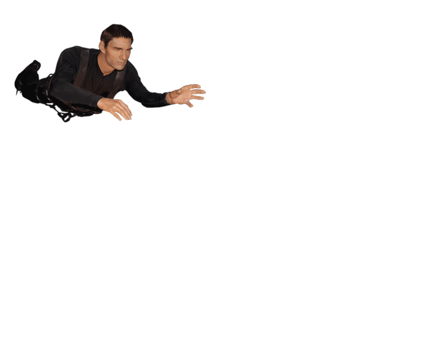
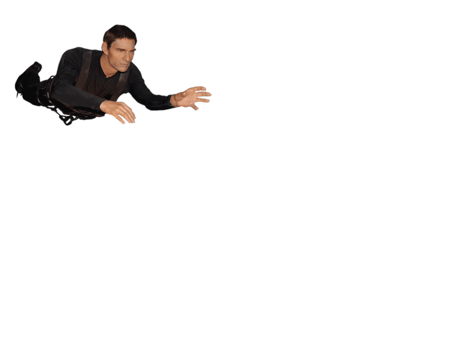

"Went in October. Very fun time. We used the props and interacted with all the wax figures, acted so silly and had such a great time. If you just walk through I'm sure it's ok but if you use the props and get into it you can have a lot of laughs. We posted the pictures and all our friends were like Wow you guys are crazy. That looked like so much fun!"


"Some of the wax figures bore little likeness to the people they were supposed to represent. It was fun to take pictures with the celebs you were familiar with."
 



"We had been to the Wax Museum in Branson and loved It so we decided to visit again while in Gatlinburg. My kids, 2 and 5 had tons of fun posing for pictures. I agree with other reviewers that the lighting is weird in spots for pictures and there are lots of the same characters at the Brandon location."